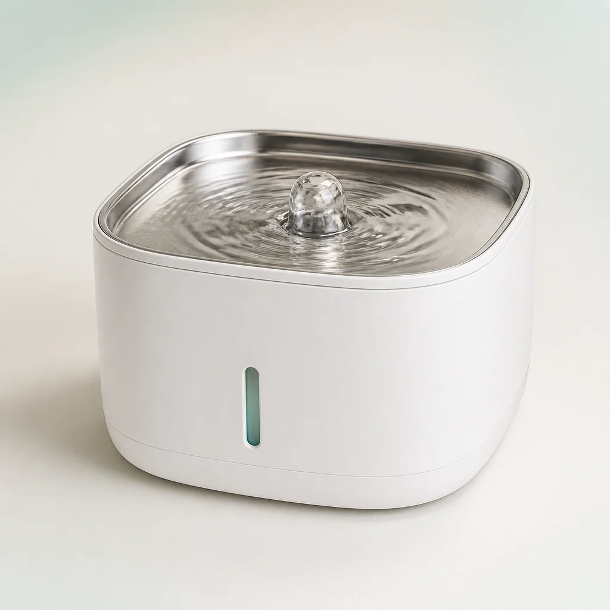
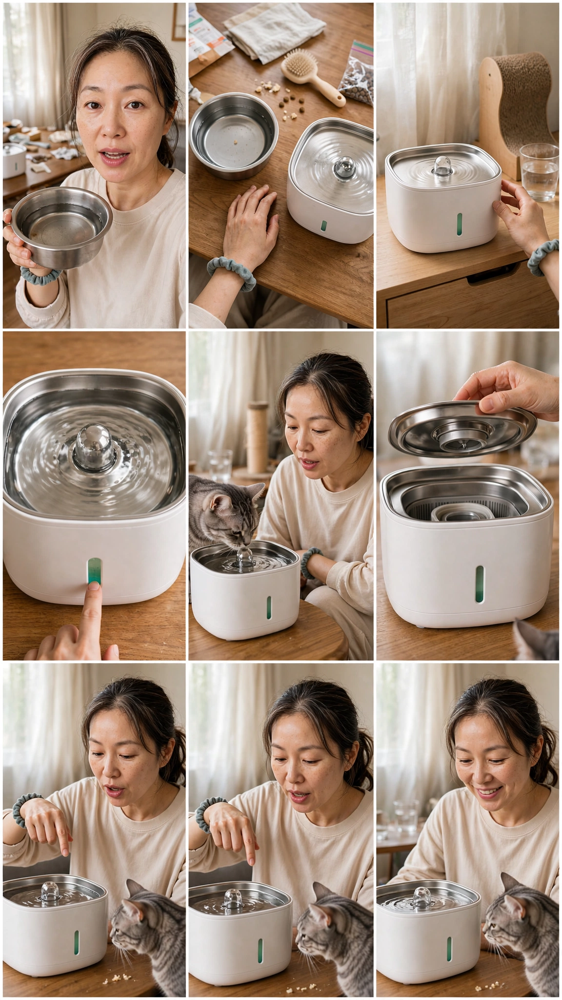
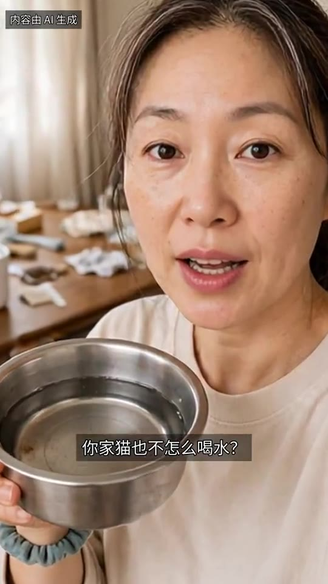
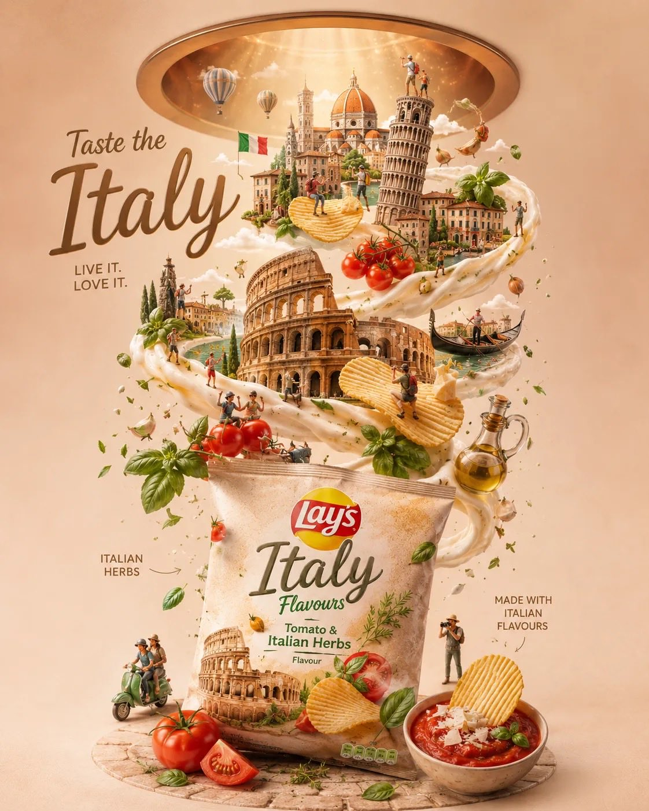
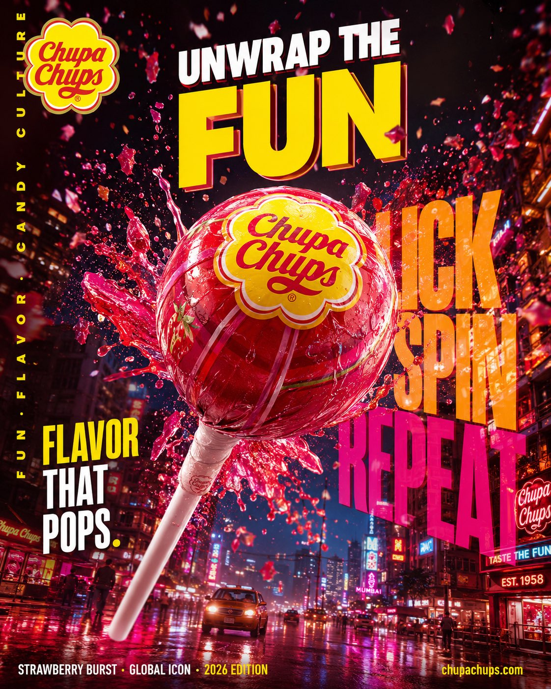
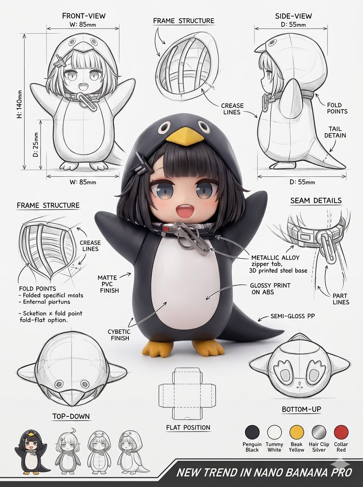
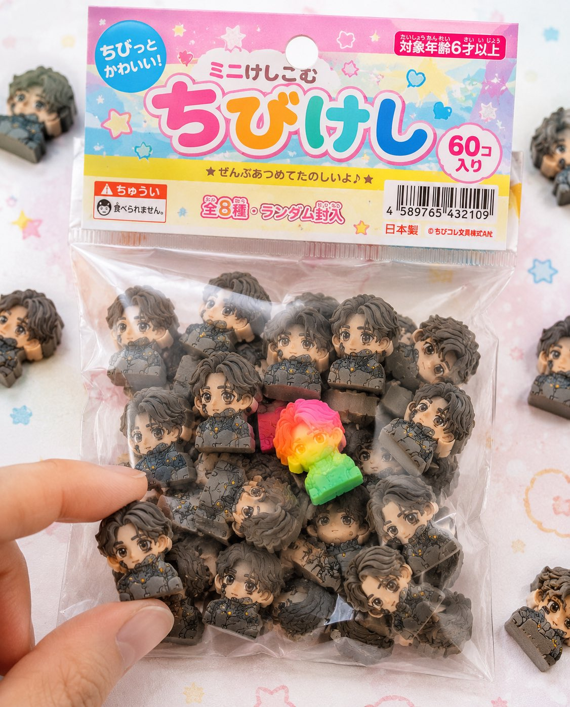
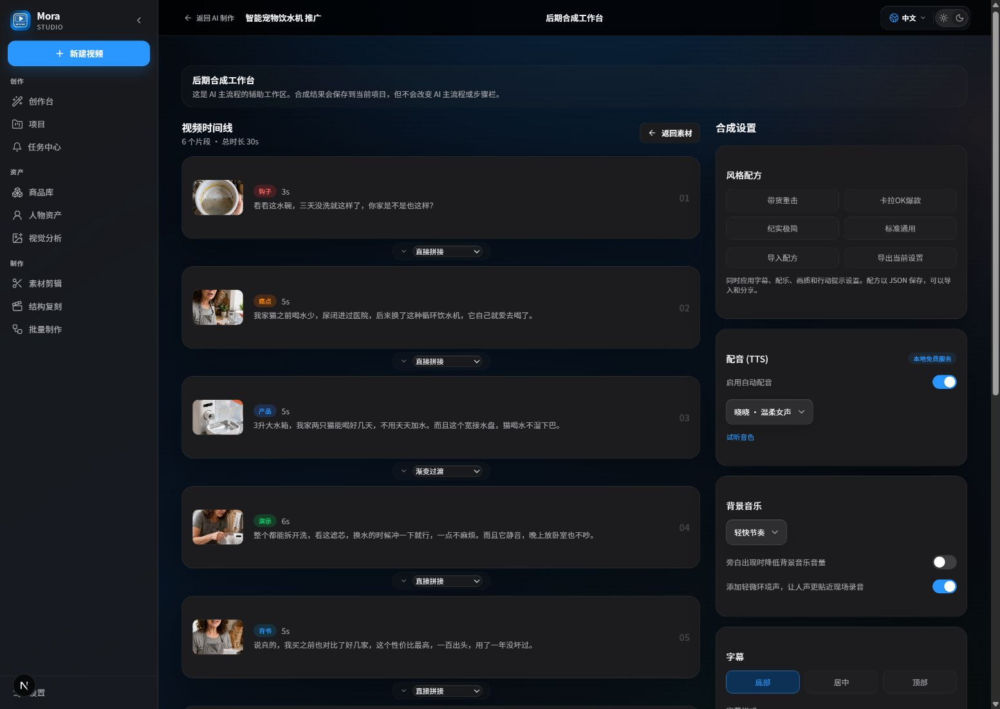

Bring in what you already have
Import product information, images, audio, or recorded video. Mora establishes the project relationship and preserves the goal without changing source files.
Bring product images, local media, audio, or footage you already shot. Choose cloud generation, local composition, or existing-video editing, then return voice, captions, music, and the final render to one project.
Projects and source media stay local · External models use BYOK · Final videos render on your machine



Three videos, three real starting points: organize existing media, connect an external model when a shot is missing, or smart-edit footage you already recorded. The salon example shows the shipped AI editing flow: understand the source, draft promotional copy and candidate plans, then complete voiceover, captions, and rendering locally after step-by-step approval.
Import product information, images, audio, or recorded video. Mora establishes the project relationship and preserves the goal without changing source files.
Use an external model only when media is missing, organize sufficient assets locally, or let AI understand existing footage and propose copy and edit plans for step-by-step approval. Cloud and local work remain clearly separated.
Picture and sound share one post-production chain. FFmpeg creates an independent output while source media, task history, and previous exports remain in the project.
Capability deck 01 / 13
Project orchestration
Generate missing shots, organize sufficient assets locally, or continue from footage you already recorded.
Showing capability 1: Three production paths, each with a clear next step
One project relationship
Every path returns to one project, task history, and output system.
Data and execution
Projects, source media, and final renders stay local; cloud calls are always identified.
External models
Send only missing visuals to a model, then keep results as local project assets.

04 / COMPOSELocal composition
Organize shots, captions, transitions, aspect ratios, and local rendering.
Existing footage
Models handle understanding, copy, and candidate plans; the local chain handles voiceover, captions, editing, and rendering.
Content planning
See the plan before execution instead of waiting for an opaque result.
Sound system
Sound is organized with picture instead of patched on at the last minute.

08 / OUTPUTExport system
Platform specifications and publishing materials remain in the project after the video is done.

09 / RECOVERTasks and versions
Leave, return, continue checking, or start again from an existing result.
Quality and publishing
Separate machine-detectable issues from risks that need human judgment.
External capability
Mora does not bind your model choice, credentials, or usage fees.

12 / ACCESSWays to run
Create in the interface or connect automation inside a private environment.
Step-by-step approval
Review and adjust video analysis, promotional copy, and candidate edit plans before the local production chain starts.

Project start
Products, topics, and existing media enter here, forming one project relationship that does not scatter.
The workflow proceeds through project workspace, script and storyboard, asset workspace, AI video, local editing, and export and delivery.
| Production stage | Mora | Traditional outsourcing |
|---|---|---|
| Media intake | Product images, local media, and existing video enter one project | Package and transfer assets to a third party |
| Path choice | Generation, composition, and editing remain distinct | Depends on communication and manual judgment |
| Production process | Tasks, failure reasons, and versions remain reviewable | The process is usually hidden |
| Media control | Source files stay untouched; outputs become new versions | Changes require another asset handoff |
| Final delivery | Local rendering with unified formats and derivatives | Wait for manual export and delivery |
| What matters | Mora | Closed AI platform | Traditional editor | Loose scripts |
|---|---|---|---|---|
| Existing local media | ✓ Compose or continue editing directly | Depends on platform upload | ✓ Strong for manual editing | Usually needs custom glue |
| Cloud model choice | ✓ BYOK, choose per task | Usually chosen by the platform | Requires another tool | Depends on configuration |
| Project and data boundary | ✓ Local project with visible calls | Usually a cloud workspace | ✓ Local project | Spread across processes |
| Complete production chain | ✓ Script, media, sound, rendering, and export | Limited to platform scope | Requires manual orchestration | Must be assembled |
| Open source and private deployment | ✓ Local or private environments | Usually unavailable | Mostly commercial licensing | Depends on the project |
This table compares common product categories and production approaches rather than specific products. Verify current capabilities in each tool's public documentation.
No. Local composition and existing-video editing can remain on your machine. Mora reaches an external model only when you explicitly choose to generate new shots.
Yes. When images, video, audio, and copy are sufficient, Mora can organize shots, voice, captions, music, and aspect ratios, then export through local FFmpeg.
Yes. After you import a video, a vision model understands its picture and sound, while a text model combines your offer and audience goals into three copy options and three edit plans, including an AI recommendation. You can approve, edit, or optionally request a rewrite at each stage before local voiceover, captions, and rendering.
No. Mora follows a BYOK approach: you configure external model platforms, and those providers charge for actual usage.
No. Mora keeps the external task ID, current state, and failure reason so you can check again, retry, or continue through a local path.
It demonstrates the complete AI smart-editing flow: the models understand the source, create promotional copy and candidate shot plans from the salon service and target audience, then local production creates the voiceover, captions, edit, and independent output after step-by-step approval.
Mora targets local or private environments and can be used through Web, Electron, Docker, CLI, and HTTP API. Full installation steps will be organized in the next bilingual README update.
From local media to cloud-generated shots and back to a local finish, every step stays visible.